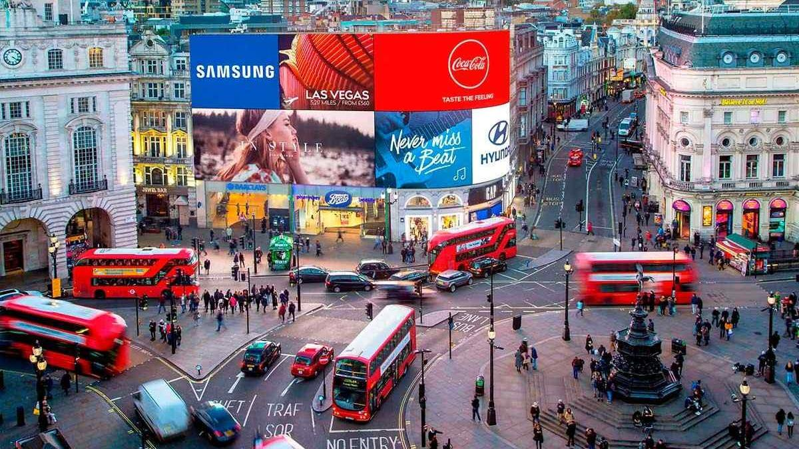
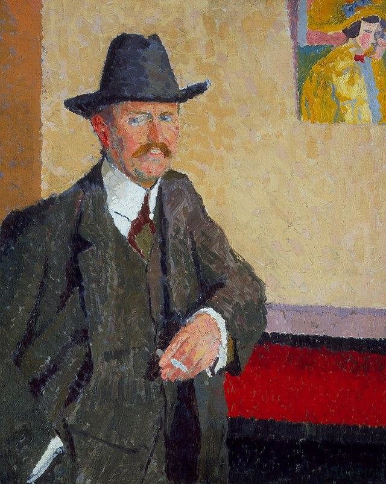

Piccadilly Circus
Piccadilly Circus, one of London's most iconic circular junctions, was built in 1819 and originally served as a hub for British retail stores. Today, it stands at the heart of central London, connecting major shopping streets and serving as a vibrant cultural and commercial landmark. Five main roads converge here, and the square is renowned for its bright neon billboards that illuminate the area, symbolizing London's modernity and energy.

Artwork Analysis and Historical Background
Charles Ginner's Piccadilly Circus, as the example of early 20th-century British New Realism, captures the everyday scene of Piccadilly Circus in London in 1912, showcasing the hustle and bustle of this iconic urban landmark. The focal point of the artwork is a "vendor girl," a flower seller, seated at the center of this famous London hub. The flower seller's calm presence stands in stark contrast to the surrounding chaos—well-dressed women hurrying by, a taxi entering the foreground, and two buses packed with passengers and adorned with route signs and advertisements.
In the late 19th century, the Victorian era was characterized by industrialization, colonial expansion, and significant social class disparities. After the death of Queen Victoria in 1901, the Edwardian era began, marking a period of luxury and relative social stability. However, the wealth gap brought about by industrialization and urbanization still persisted. In the painting, cars have become the primary mode of transportation on the streets, replacing traditional methods such as horse-drawn carriages. Ginner observed the contrast between old and new in London. It remains unclear whether his sympathy lies with the flower seller, modern transportation, or the contrast itself.
Artist Biography

Charles Isaac Ginner CBE ARA (March 4, 1878 – January 6, 1952) was a British painter known for his landscape and urban scenes. Born in Cannes, France, to British parents, he moved to London in 1910, where he became closely associated with Spencer Gore and Harold Gilman, playing a central role in the Camden Town Group. He was skilled at conveying social turmoil and transformation through simple lines, strong color contrasts, and expressive compositions. His approach to form and painting style was influenced by Vincent van Gogh, whose works Ginner saw in London in 1910-11 and in Paris in 1911. On January 1, 1914, Ginner published a manifesto on the "New Realism" of the new era, which was later republished in the exhibition catalog for his and Gilman's show at the Goupil Gallery in April, representing their shared philosophical ideas.
Style Interpretation
New Realism inherited the Impressionists' studies of light and color, rejecting formulaic tendencies, and drew on Cézanne, Gauguin, and Van Gogh's unique interpretations of nature. It advocated for direct observation and deep study of nature, extracting previously undiscovered truths and expressing them in a personal way, viewing nature as the true source of artistic creation. It emphasized observation and interpretation of the times, capturing contemporary landscapes, atmospheres, cities, and crowds to document and interpret life, transforming it into a future record connected to history. By collaborating with nature, artists infused their ideals, emotions, and visions into their work, giving it distinctive personal characteristics and universal significance.